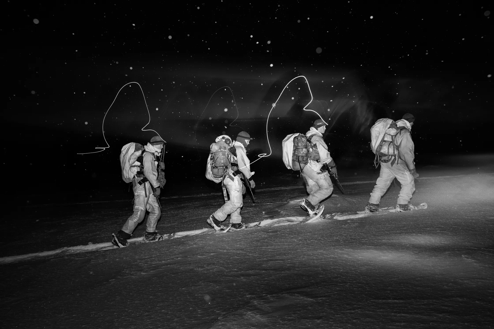

Russia's Espionage War In The Arctic
Ben Taub for The New Yorker, September 9, 2024
https://www.newyorker.com/magazine/2024/09/16/russias-espionage-war-in-the-arctic
A fishing boat was no longer just a fishing boat, in the eyes of Norwegian authorities. That summer, the Russian government had declared that commercial vessels could be co-opted by the military for any purpose. The fjords of Kirkenes open up to the Barents Sea, just a few miles from where the Russian Navy’s Northern Fleet has engaged in espionage and nuclear-war preparations since the earliest days of the Cold War. Locals in Kirkenes, a town of thirty-five hundred people, noticed that Russian fishermen were younger than those who had come before the war in Ukraine, and that they sometimes did physical-training exercises on the decks of their ships. Russian sailors carry handwritten seafarer passports. “You don’t actually know who is on board,” Roaldsnes told me. “If you do a deep dive on a bunch of sailors, you will eventually find somebody linked to the Northern Fleet.” Recently, crew on a vessel that had been associated with the destruction of subsea communications cables had steered a motorboat into restricted waters near a Norwegian Army garrison. Were they testing their equipment, or the speed of the Norwegian response? A search of two trawlers had revealed radios that could tune into military frequencies which are used by the Northern Fleet. I asked Roaldsnes whether the trawlers were effectively functioning as intelligence vessels. “No, they’re fishing vessels,” he said. “Well . . .” He winced, and rephrased his assessment: “They fish.” For the past few years, civilian life in northern Norway has been under constant, low-grade attack. Russian hackers have targeted small municipalities and ports with phishing scams, ransomware, and other forms of cyber warfare, and individuals travelling as tourists have been caught photographing sensitive defense and communications infrastructure. Norway’s domestic-intelligence service, the P.S.T., has warned of the threat of sabotage to Norwegian train lines, and to gas facilities that supply energy to much of Europe. A few months ago, someone cut a vital communications cable running to a Norwegian Air Force base. “We’ve seen what we believe to be continuous mapping of our critical infrastructure,” Roaldsnes told me. “I see it as continuous war preparation.” The aberrant trawlers left as quietly as they had come. Roaldsnes had spent Christmas privately agonizing over the possibility that there was a special-forces unit scattered among the ships. Was this a dry run for a potential attack? Or was the threat mostly imaginary—a “wilderness of mirrors,” as a former C.I.A. counterintelligence chief once described such things? After a decade in the P.S.T., Roaldsnes considered it professionally important to never fully make up his mind. Counterintelligence, he later told me, “is like playing tennis without seeing your opponent or whether it’s actually a ball being served to you. It might behave as a ball. But, when you get close, it’s an orange.” Most Western governments do not appear to think of themselves as being at war with Russia. Russia, however, is at war with the West. “That’s for sure—we are saying that openly,” the Russian representative to the United Nations recently declared. Most attacks are deliberately murky, and difficult to attribute. They are acts of so-called hybrid warfare, designed to subdue the enemy without fighting. The strategy appears to be to push the limits of what Russia can get away with—to subvert, to sabotage, to hack, to destabilize, to instill fear—and to paralyze Western governments by hinting at even more aggressive tactics. “They do it because they can do it,” an air-traffic controller told me, of an electronic-warfare attack that imperils civilian aviation. “Then they deny everything, and they threaten you, saying that, if you don’t stop accusing them of what you know they’re doing, bad things will happen to you.” Ever since Russia annexed Crimea, in 2014, its military and intelligence services have been experimenting with hybrid warfare and influence operations in Kirkenes, treating the area as “a laboratory,” as the regional police chief put it to me. Some attacks were almost imperceptible at first; others disrupted everyday life and caused division among locals. To understand what was happening in her district, she started reading Sun Tzu. Then, in early 2022, Russia invaded Ukraine. The conversations inside Roaldsnes’s office, in Kirkenes, took on an existential tone, because Vladimir Putin has shown himself to be willing to risk it all over relatively small, strategically important areas. The Article 5 policy of collective defense states that an attack on one NATO member is an attack on all. But would the United States engage in thermonuclear war over a sparsely populated swath of Arctic Norway? Countries throughout Europe now acknowledge that their people and infrastructure are under ceaseless attack. Yet each incident is, by itself, below the threshold that would require a military response or trigger Article 5. In recent months, agents of Russian intelligence are believed to have assassinated a defector in Spain, planted explosives near a pipeline in Germany, carried out arson attacks all over the Continent, and sabotaged subsea cables and rail lines. A Russian operative injured himself in Paris while preparing explosives for a terrorist attack on a hardware store, and U.S. intelligence discovered a Russian plot to assassinate the C.E.O. of one of Europe’s largest arms manufacturers. Poland’s interior minister said, “We are facing a foreign state that is conducting hostile and—in military parlance—kinetic action on Polish territory.” Every European country that borders Russia is preparing for a wider war in the event of a Russian victory in Ukraine. Poland and the Baltics are digging trenches at their borders and fortifying them, often with antitank obstacles known as “dragon’s teeth.” Finland cast aside seventy years of neutrality and nonalignment to join NATO; Sweden cast aside two hundred.